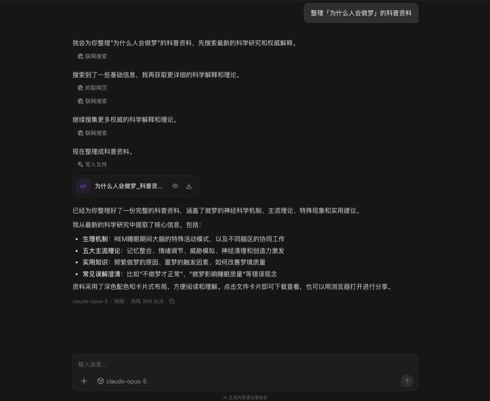
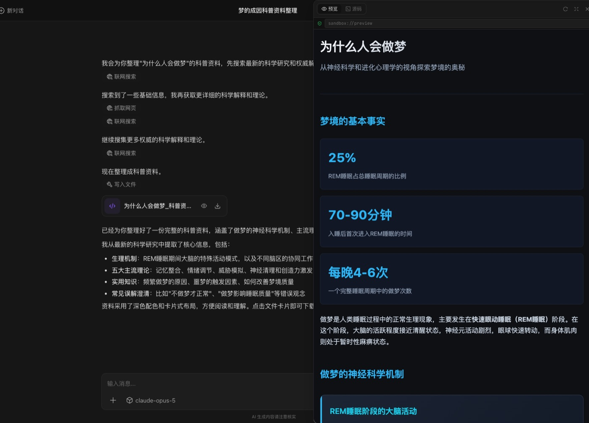
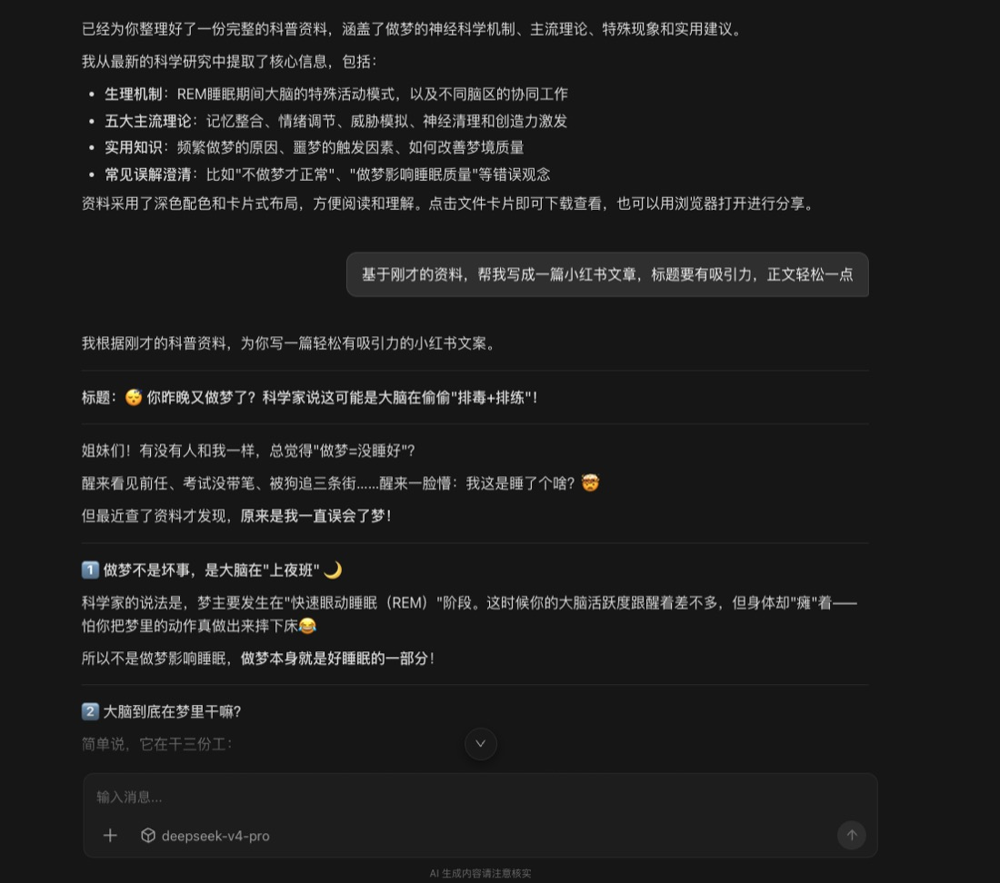

自由模式 · 内容创作
一个 AI 查资料
另一个 AI
写文案
同一个对话里换模型，上下文不断。
每一步交给更合适的 AI。
Lucimix
做科普号的新手：一个 AI 查严谨资料，换一个 AI 写成小红书文案
做科普号最难的是两头都要顾：资料要严谨，不能瞎编；文案又要有网感，不然没人看。
我的办法是在 Lucimix 的「自由模式」里，让两个 AI 接力。
第一棒：选一个擅长整理资料的模型
切到自由模式，选 claude-opus-5，让它整理「为什么人会做梦」的科普资料。
它先联网搜索、抓取网页，把资料整理成一份完整的科普页面，包括神经科学机制、主流理论、常见误解。


第二棒：换一个中文网感更好的模型
资料有了，接下来要写成小红书文案。还是在同一个对话里，点输入框下方的模型名，切换到 deepseek-v4-pro。

然后只说一句：「基于刚才的资料，帮我写成一篇小红书文章，标题要有吸引力，正文轻松一点。」
因为上下文不中断，它直接读到了第一棒整理好的资料，不用我再复制粘贴。

出来的标题是：「你昨晚又做梦了？科学家说这可能是大脑在偷偷"排毒+排练"！」正文里的知识点，都来自第一棒整理的资料。
什么时候用自由模式？
- 你已经知道某个模型在某件事上更顺手
- 一个任务可以拆成几步，每步要求不一样，比如先严谨、再有趣
- 想在一个账号里用到国内外不同的模型
一个账号，多个 AI，同一个对话里接力完成。